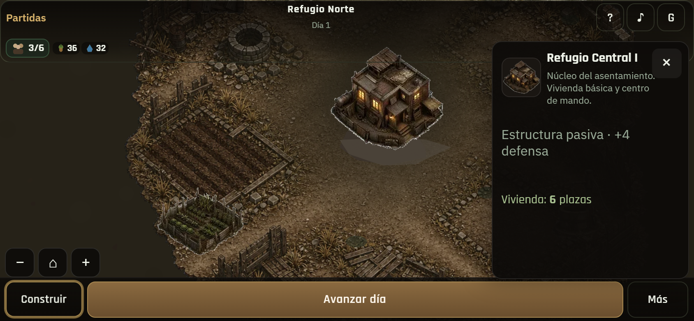
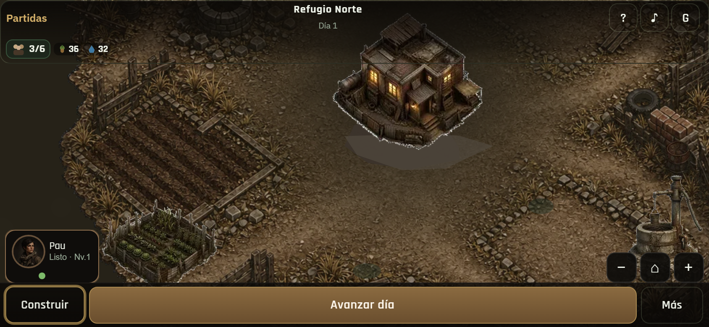
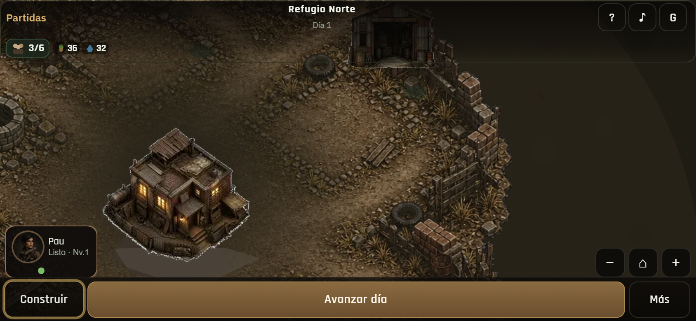
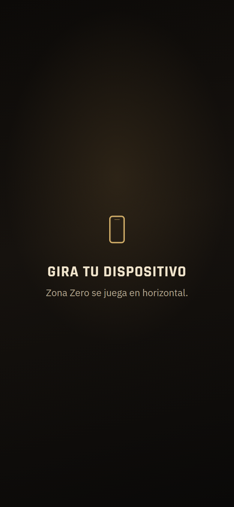
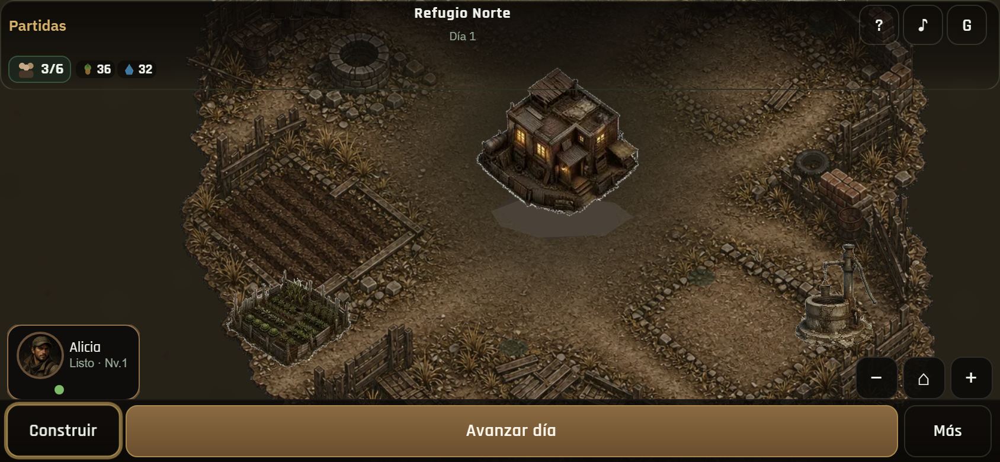
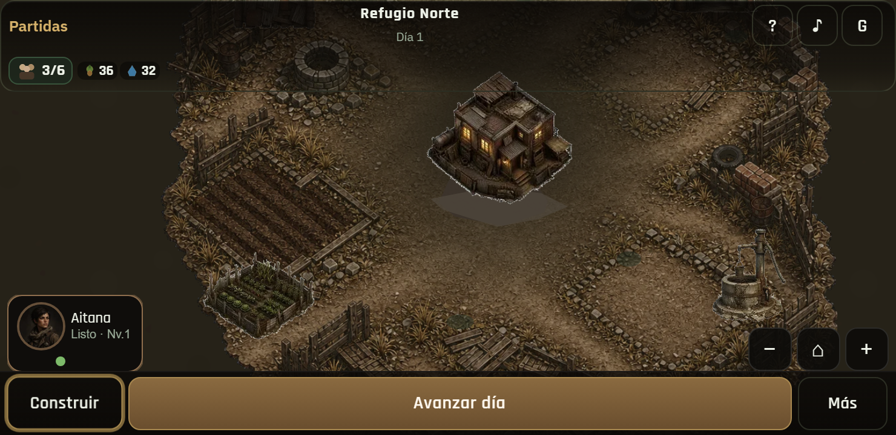
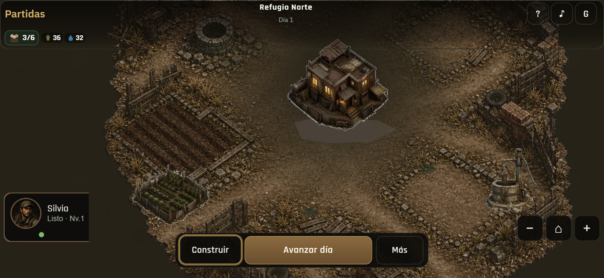
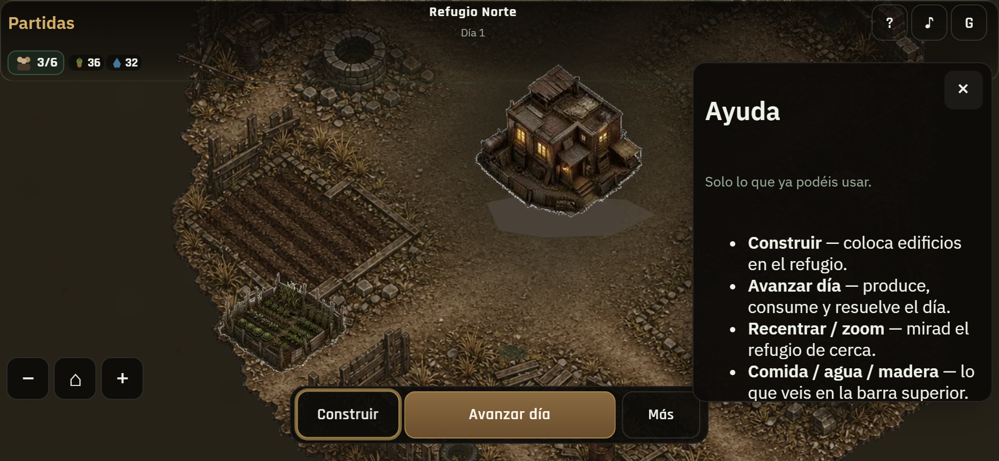
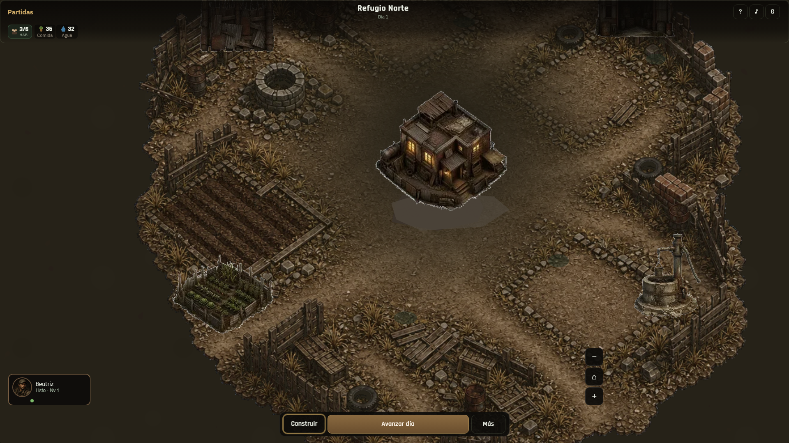
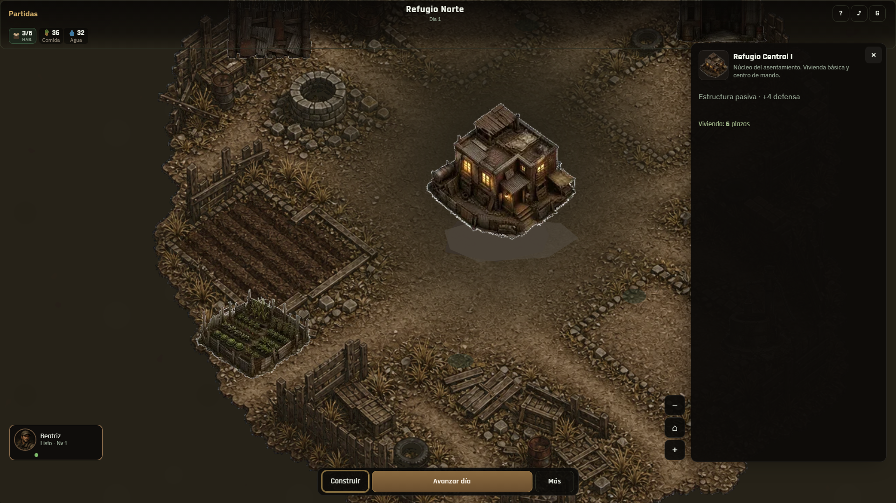

01 · Landscape D1 (844×390)Mundo protagonista + HUD compacto

02 · HQ seleccionadoFicha lateral compacta

03 · Zoom inCámara landscape

04 · PanMundo continúa hacia los lados

05 · Rotate gatePortrait gameplay bloqueado con marca ZZ

06 · Tras girarVuelve al gameplay; estado intacto

07 · Landscape pequeño (740×360)Chrome comprimido; mundo visible

10 · Landscape 932×430Viewport representativo grande

11 · Ayuda landscapeSheet lateral

08 · Desktop D1Panorámico sin rotate gate

09 · Desktop HQPanel lateral desktop